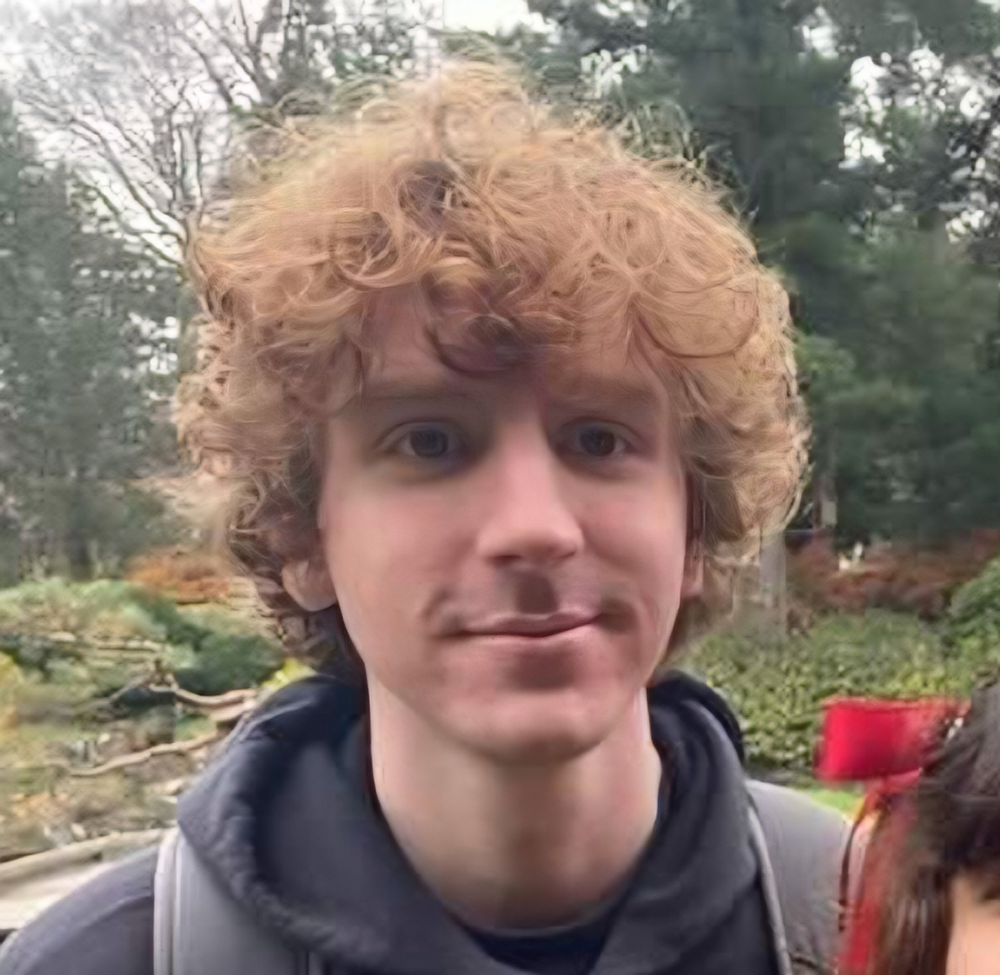
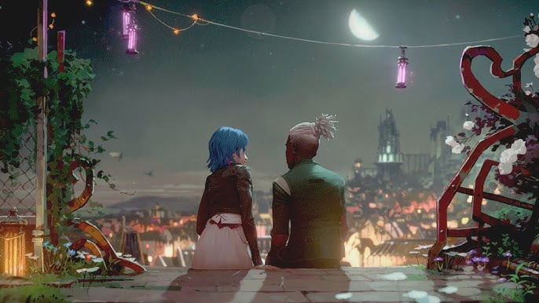
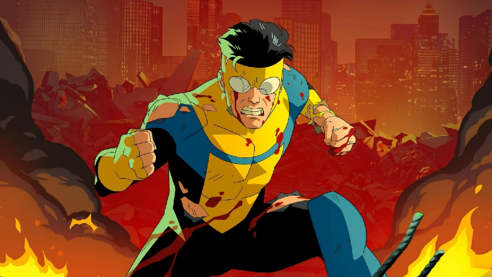
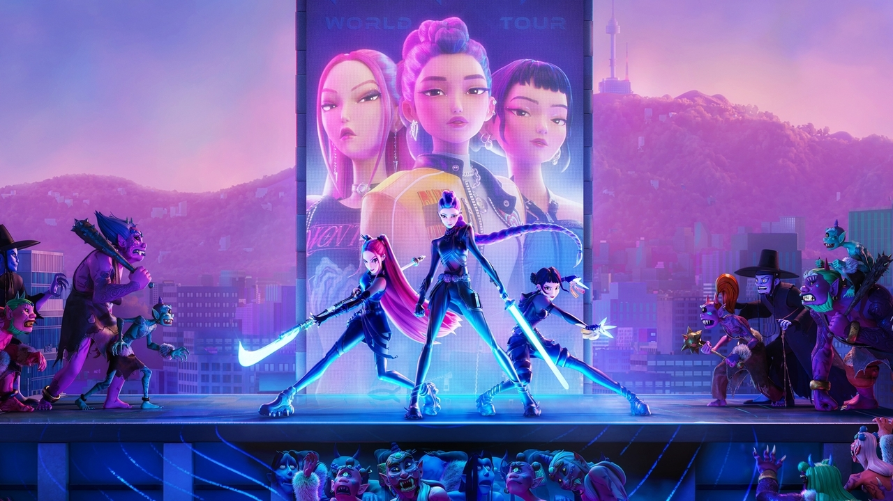
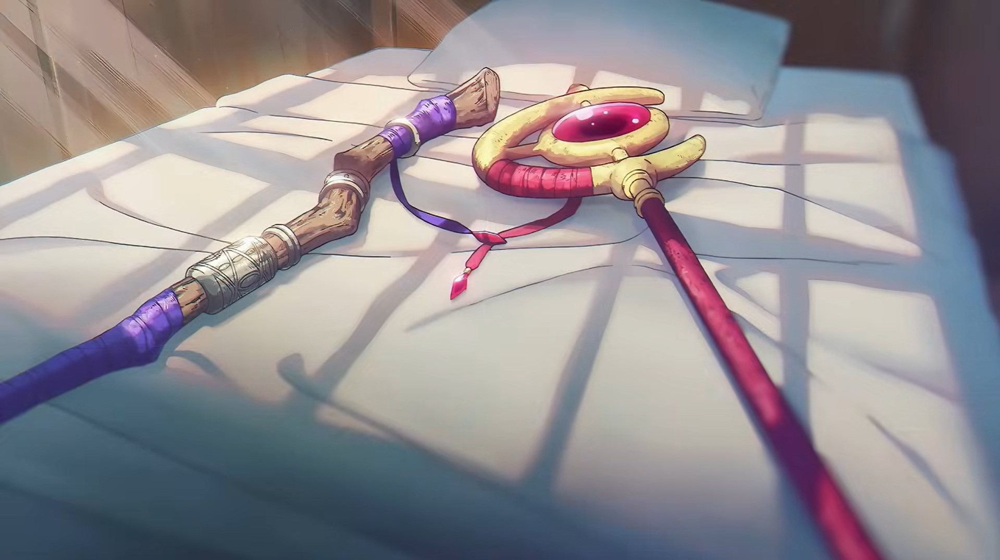
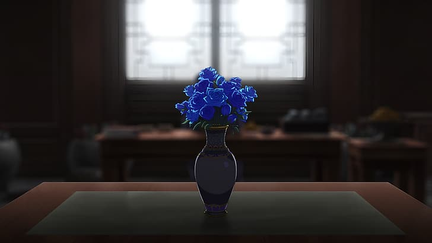
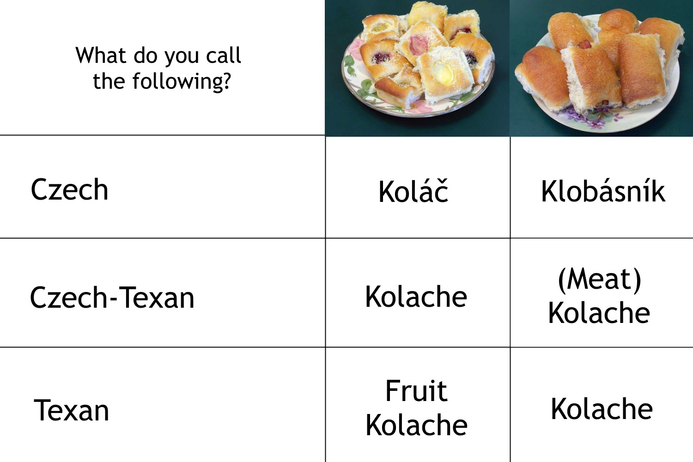

Nicholas Kocureknichok6[at]cs.washington.edu I am a first-year CSE PhD student at the University of Washington Allen School as part of the CS Theory and Quantum CS Groups, where I am fortunate to work with Chinmay Nirkhe and Shayan Oveis Gharan. Previously, I did my undergraduate at Carnegie Mellon University. |
Picture is from the Shofuso Japanese Cultural Center in Philly
|
Research
I am broadly interested in theoretical computer science and particularly in classical and quantum complexity theory. Even more specifically, I like to work with CSPs and their quantum and sampling generalizations. Recently, I have been thinking about what makes low energy states of local Hamiltonians complex.
Publications
-
Spectral Certificates and Sum-of-Squares Lower Bounds for Semirandom Hamiltonians
Manuscript
[arXiv]
-
Sampling and Identity-Testing Without Approximate Tensorization of Entropy
Manuscript
[arXiv]
-
Spectral Refutations of Semirandom 𝑘-LIN over Larger Fields
APPROX 2025
[arXiv]
-
Pseudorandomness Properties of Random Reversible Circuits
CRYPTO 2025
[arXiv]
Teaching
I have been a teaching assistant for the following courses:
- [CMU] 15-251: Great Ideas in Theoretical Computer Science (Fall 2022-Spring 2025)
- [CMU] 15-252: More Great Ideas in Theoretical Computer Science (Fall 2024)
- [CMU] 15-354: Computational Discrete Math (Fall 2024)
- [CMU] 15-455: Undergraduate Complexity Theory (Spring 2024, Spring 2025)
Miscellaneous
I am a big fan of , Pittsburgh sports, social deduction games, and mystery novels.






I pronounce my last name "koh-sir-ick".
Here 